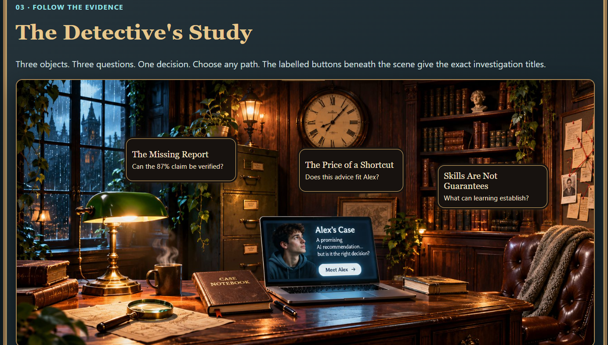
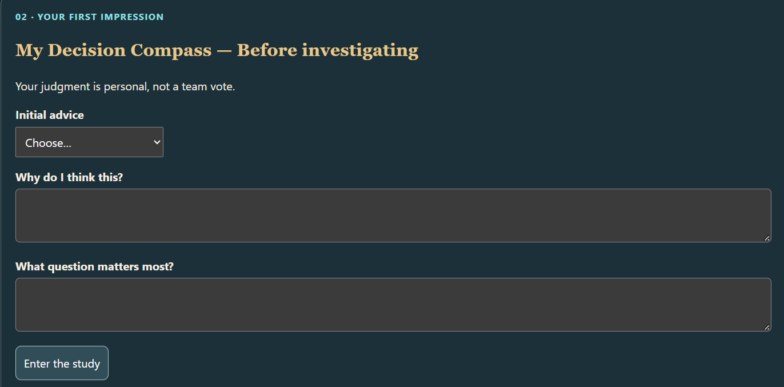
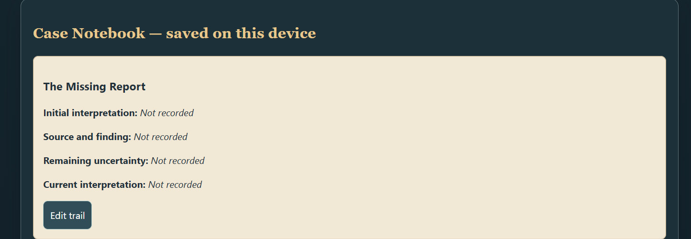

The Evidence Room
Is the Shortcut Worth Taking? A self-directed, scenario-based investigation where young adults evaluate a confident AI recommendation, examine the evidence, and make a defensible decision without being told what to think.
Snapshot
When an AI answer sounds more certain than the evidence
Alex, a fictional 24-year-old jobseeker, is considering the real Google Digital Marketing & E-commerce Professional Certificate. He has limited time and money. A scripted AI response confidently recommends enrolling, citing an alleged Google outcomes report claiming that 87% of graduates secured a relevant job within six months.
That statistic and its attribution are part of the fictional scenario—not verified facts. The learning problem is not simply to spot an unreliable claim. It is to decide what advice Alex can responsibly act on, given the evidence, his circumstances, and the uncertainty that remains.
Make the case engaging enough to investigate without turning it into a quiz with a hidden “correct” answer. Learners need to own the reasoning, not merely identify the designer's preferred choice.
Agency first, with enough structure to support inquiry
The experience is designed for young adults encountering persuasive digital advice in decisions that have real personal costs. It assumes no specialist fact-checking expertise. Participants may investigate collaboratively during a facilitated session or return to the case independently.
To reduce unnecessary pressure, investigations can be opened in any order, notebook fields may be left blank, and different well-reasoned conclusions are acceptable. The case includes optional research leads rather than mandatory checkpoints.
Three investigations, one judgment
The learning architecture deliberately separates claim verification, personal fit, and the difference between skills and employment outcomes. A recommendation can be factually plausible in parts and still be poorly suited to the person receiving it.
Investigation 01
The Missing Report
Trace the alleged employment statistic to its source. Distinguish a quoted claim from verifiable evidence, and note what cannot be established.
Investigation 02
The Price of a Shortcut
Consider Alex's available time, money, goals, and alternatives before treating enrolment as an obvious next step.
Investigation 03
Skills Are Not Guarantees
Separate what a certificate teaches from what it can credibly promise about job outcomes.
The detective-study environment invites exploration, but the learner controls the route. There is no forced order, completion gate, score, or artificial penalty for uncertainty.
Reflection is built into the decision
The Decision Compass captures an initial recommendation before investigation and a final judgment afterwards. The Case Notebook supports recording discoveries, doubts, and revisions. A perspective-exchange activity adds social reasoning in the live workshop; independent users encounter clearly fictional perspectives instead of simulated real participants.
From briefing to evidence-based advice
Participants open a confidential case briefing, read Alex's request and the scripted AI response, record an initial view, then explore a warm, gothic detective study. The three investigative paths remain independent, so participants can follow the questions that matter most to them.
The interactive includes a Case Notebook, Evidence Board, optional research leads, and final decision. Entries are stored locally in the browser where storage is available; participants can export a record. The interface also warns users about shared-device privacy and offers a way to clear saved entries.
The case is designed to support a 90-minute facilitated workshop. The digital experience can also be revisited independently; it does not replicate the human discussion of a live session.
Three interactions, three opportunities to think
Authentic screenshots from the developed experience illustrate the instructional design; they are not evidence of measured learning outcomes.



What has been checked—and what has not
The interactive has undergone practical testing and iterative design review. That supports a statement about development readiness, not a claim that learners improved their critical thinking or decision-making.
Current status: designed, not yet piloted. No formal learner-outcome data or controlled evaluation is presented here. A facilitated pilot could examine whether participants identify unsupported claims, consider constraints and alternatives, and explain how their reasoning changed or remained stable.
The most important output is a reasoned decision
The case intentionally avoids rewarding one recommendation. “Enrol,” “don't enrol yet,” and “it depends” can each be defensible when supported by appropriate evidence and clear acknowledgement of uncertainty. The instructional aim is to help learners ask better questions before committing time and money.
For me, the central design lesson is that autonomy does not mean leaving learners unsupported: optional leads, visible evidence, and reflective prompts can create structure without taking ownership of the decision away from the learner.